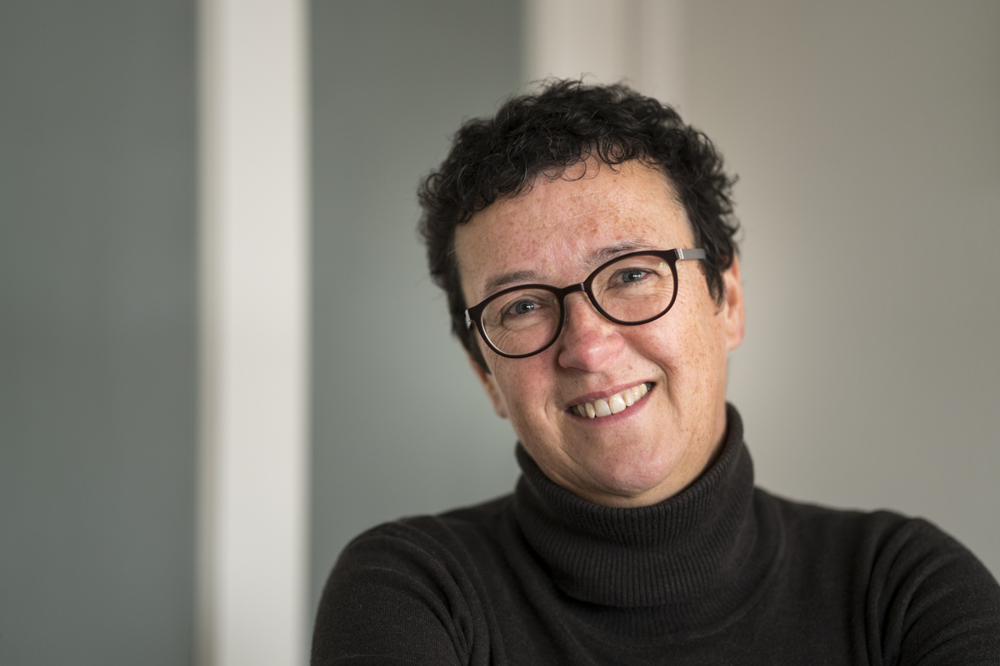

About
Annemarie Hoogwoud is a Dutch photographer, born in Amsterdam in 1962. Her neighbour showed her his images of Iceland and Greenland and through those long evenings with his slideshows her love for landscape photography arose. He gave her her first camera. During the following years her yearning for imagining the wide and deserted landscapes grew. Whereas she lived in Fryslân her view were the wide Frisian landscapes. During that period in time her passion for landscape photography really got the space it deserved. It became more and more clear that Annemarie is at her best in those wide landscapes.
To really want to see what is became the thread in my life. Photography helps me in many ways. Through my images I am always looking for the essence of what is, for powerful simplicity, for the beauty of commonplace, for creating a world of space in the landscape literally and figuratively. From there I discover new worlds, both inside and outside myself.
Your mind and attitude to the landscape itself must be in the right shape, I’ve learned from my great inspirator, Charlie Waite, English landscape photographer: “A good photograph is a received photograph, an exchange between you and the landscape, in which there is a dialogue between the two of you. It is simply courtesy to allow the landscape to speak. “
The moment I feel connected with the landscape, that I feel the landscape, that is indeed my decisive moment. The image almost gives notice of itself and in that way ‘my eye on landscape’ takes shape.
